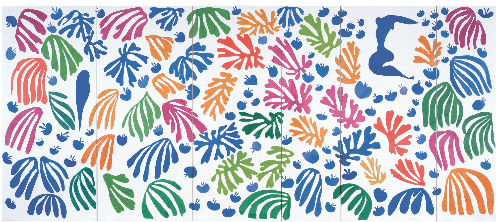
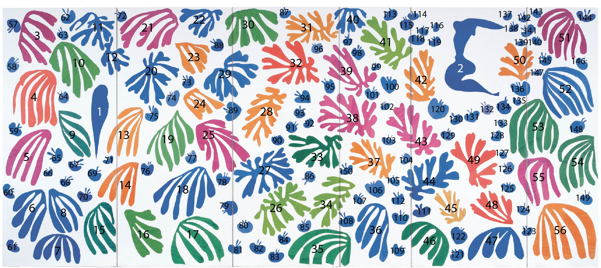
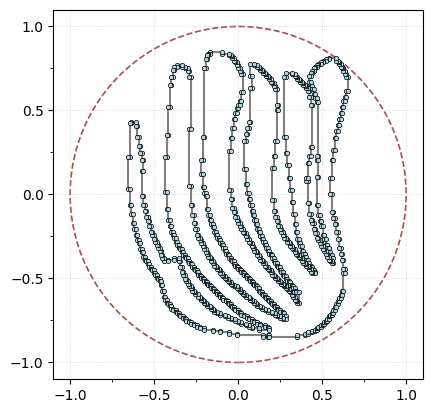
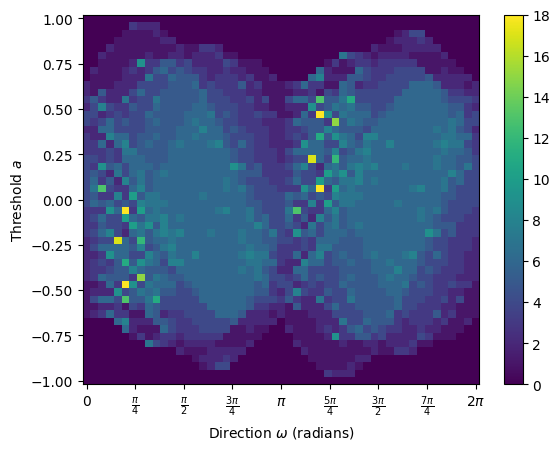
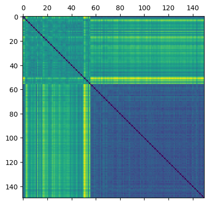
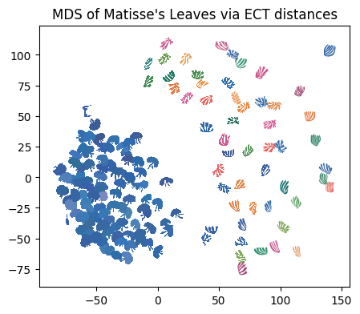

3.3. ECT on Matisse’s “The Parakeet and the Mermaid”
Here, we are going to give an example of using the ECT to classify the cutout shapes from Henri Matisse’s 1952 “The Parakeet and the Mermaid”.

[ ]:
# -----------------
# Standard imports
# -----------------
import numpy as np # for arrays
import matplotlib.pyplot as plt # for plotting
from sklearn.decomposition import PCA # for PCA for normalization
from scipy.spatial import distance_matrix
from os import listdir # for retrieving files from directory
from os.path import isfile, join # for retrieving files from directory
from sklearn.manifold import MDS # for MDS
import pandas as pd # for loading in colors csv
import os
import zipfile
import warnings
warnings.filterwarnings('ignore')
# ---------------------------
# The ECT packages we'll use
# ---------------------------
from ect import ECT, EmbeddedComplex # for calculating ECTs
# Note: EmbeddedGraph is now unified into EmbeddedComplex
# For backward compatibility, you can still use:
# from ect import EmbeddedGraph
# Simple data paths
data_dir = "outlines/"
colors_path = "colors.csv"
file_names = [
f for f in listdir(data_dir) if isfile(join(data_dir, f)) and f[-4:] == ".txt"
]
file_names.sort()
print(f"There are {len(file_names)} files in the directory")
We’ve taken care of the preprocessing in advance by extracting out the shapes from the image. You can download these outlines here: outlines.zip.

[ ]:
i = 3
shape = np.loadtxt(data_dir + file_names[i])
# shape = normalize(shape)
G = EmbeddedComplex() # Using the unified EmbeddedComplex class
G.add_cycle(shape)
G.plot(with_labels=False, node_size=10)
We’re going to align the leaf using the PCA coordinates, min-max center, and scale it to fit in a ball of radius 1 for ease of comparisons.
[3]:
G.transform_coordinates(projection_type="pca") # project with PCA
G.scale_coordinates(1) # scale to radius 1
G.plot(with_labels=False, node_size=10, bounding_circle=True)
[3]:
<Axes: >

And then we can compute the ECT of this leaf.
[4]:
num_dirs = 50 # set number of directional axes
num_thresh = 50 # set number of thresholds each axis
myect = ECT(num_dirs=num_dirs, num_thresh=num_thresh); # intiate ECT
result = myect.calculate(G); # calculate ECT on embedded graph
result.plot(); # plot ECT
OMP: Info #276: omp_set_nested routine deprecated, please use omp_set_max_active_levels instead.

Let’s just make a data loader with all of this for ease in a bit.
[ ]:
def matisse_ect(filename, ect):
shape = np.loadtxt(data_dir + filename)
G = EmbeddedComplex() # Using the unified EmbeddedComplex class
G.add_cycle(shape)
G.transform_coordinates(projection_type="pca")
G.scale_coordinates(1)
result = ect.calculate(G)
return result
And now we can load in all the outlines, compute their ECT and store it in a 3D array.
[6]:
num_dirs = 50 # set number of directional axes
num_thresh = 50 # set number of thresholds each axis
ect_arr = np.zeros((len(file_names), num_dirs, num_thresh))
myect = ECT(num_dirs=num_dirs, num_thresh=num_thresh, bound_radius=1)
for i in range(len(file_names)): # for each leaf
ect_arr[i, :, :] = matisse_ect(file_names[i], myect)
Here, we are just going to compute the distance between two ECTs using \(L_2\) distance.
[7]:
flattened_ect = ect_arr.reshape(len(file_names), num_dirs * num_thresh)
D = distance_matrix(flattened_ect, flattened_ect)
plt.matshow(D)
[7]:
<matplotlib.image.AxesImage at 0x32185cbd0>

For visualization purposes, we can project this data into 2D using Multi Dimensional Scaling (MDS). Here we plot each figure at the MDS coordinates.
[8]:
n_components = 2 # select number of components
mds = MDS(
n_components=n_components, # initialize MDS
dissimilarity="precomputed", # we have precomputed the distance matrix
normalized_stress="auto",
random_state=5, # select random state for reproducibility
)
MDS_scores = mds.fit_transform(D) # get MDS scores
[9]:
# read in color hexcodes
col_df = pd.read_csv(colors_path, header=None)
scale_val = 6 # set scale value
plt.figure(figsize=(5, 5)) # set figure dimensions
for i in range(len(file_names)): # for each leaf
shape = np.loadtxt(data_dir + file_names[i]) # get the current shape
shape = shape - np.mean(shape, axis=0) # zero center shape
shape = (
scale_val * shape / max(np.linalg.norm(shape, axis=1))
) # scale to radius 1 then mult by scale_val
trans_sh = shape + MDS_scores[i] # translate shape to MDS position
plt.fill(trans_sh[:, 0], trans_sh[:, 1], c=col_df[0][i], lw=0) # plot shape
plt.gca().set_aspect("equal")
plt.title("MDS of Matisse's Leaves via ECT distances")
# plt.savefig("Matisse_MDS.png", bbox_inches = 'tight', dpi=300)
[9]:
Text(0.5, 1.0, "MDS of Matisse's Leaves via ECT distances")

3.3.1. Acknowledgements
This notebook was written by Liz Munch based on original code from Dan Chitwood.